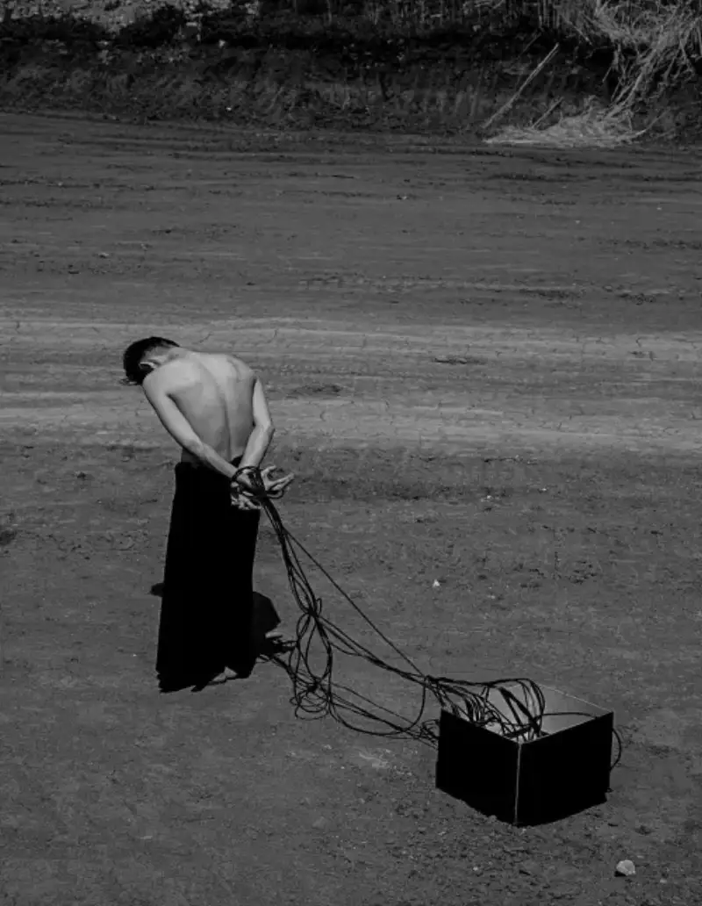
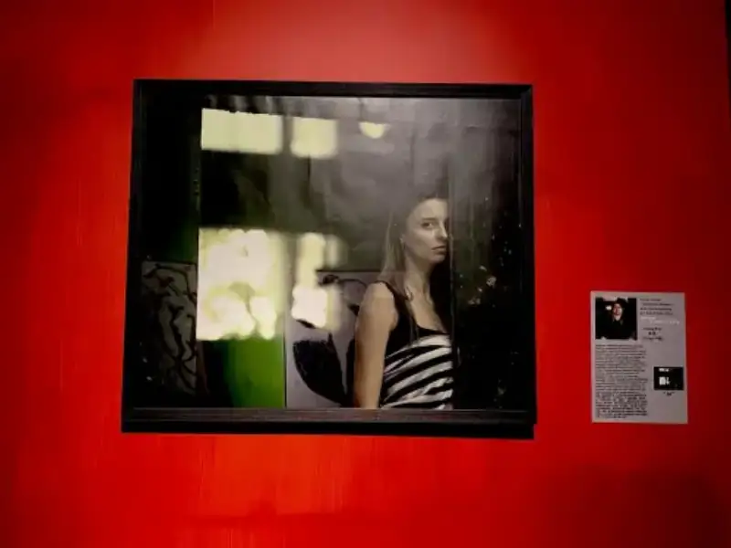

Conceptual photography: a storm of thought in photography
In the wide world of photography, conceptual photography is a strong storm of thought. It breaks the borders of traditional photography and, with a unique view and deep meaning, shows us a new visual world.
By definition, conceptual photography is an extension of conceptual art onto the photographic medium. It is a relatively independent way of creating. It no longer just records the objective world. Instead, it uses photography as a carrier to pass on the ideas, feelings, and thoughts deep in the photographer's mind. Where traditional photography tries to reproduce a scene truly, conceptual photography is more like a visual philosophical discussion. Through carefully built images, it pushes the viewer to reflect deeply on society, human nature, and culture.
Conceptual photography grew out of the conceptualist movement in Western painting in the 1960s. At that time, photography began to explore its own essence and break free from old ways of expression. From the very start of photography, the seed of the concept was already there. Works such as Oscar Gustave Rejlander's The Two Ways of Life in the mid-to-late 1800s, and Henry Peach Robinson's Autumn and The Last Moments, already showed early signs of conceptual photography. Even though the term was not yet named, they laid the ground for its later growth. True conceptual photography took shape in Western post-modern society and then spread worldwide to become a necessary part of contemporary art.
China's own path in conceptual photography is also full of exploration and breakthrough. On April 28, 1988, in issue 44 of the Photography News, Central Academy of Fine Arts students Wang Hu, Wang Youshen, Chen Shuxia, and Liu Qinghe published Our Work Awaits the Test of Society. This was the first clear use of the term conceptual art, though it was not widely accepted at the time. In 1991, the China Photography Press translated and published the ICP Encyclopedia of Photography, which gave the first fairly complete introduction to conceptual photography. In 1997, Dao Zi curated New Images: Conceptual Photography Art Exhibition, and in 1998 Zhu Qi curated Images of the Strange: China New Conceptual Photography Art Exhibition. These shows put the term conceptual photography firmly on the map in the domestic art world. Since then, conceptual photography in China has grown, gained international attention, and Chinese conceptual photographers have appeared in international avant-garde and group art shows, taking their place on the world stage. Ms. Zhang Pei is one of China's outstanding conceptual photography curators and photographers.
Zhang Pei: honestly recording the corners of today's society from the angle of human nature and conscience
Zhang Pei was born in Henan in 1982. From childhood she loved to watch the details of life and use photography to keep lasting moments, expressing love, nostalgia, helplessness, and irony. As she grew, she found that conceptual photography best expressed her feelings and showed her outstanding photographic talent. She kept on learning, reflecting, and growing, and became an outstanding conceptual photography curator and photographer. Below are some of her international honors:
* 2024 New York Photography Award, Silver:
This work by Ms. Zhang is part of her Healing series. It uses visual storytelling to explore the struggles deep in the hearts of young people today. Through art, it passes on the power of awakening and healing, and leads viewers to reflect and find their own resonance. The work has drama and narrative. In the center of the frame stands a bare-chested young man, his back to the camera, a sign of fragility and loneliness. His hands are caught in a web of cables that wind down to the ground and gather into a pure black square box. His body is twisted, leaning forward, head low, showing a weariness and despair that are hard to put into words. The background, a vast and barren land, deepens the feeling of being abandoned, and the silence of the place magnifies the sense of loneliness and hardship. The tangled cables stand for the choking pressure of modern society and show the struggle between the human spirit, hardship, and the wish to be free. By contrast, the ominous black box stands for the root of this bondage, the tangled and often unbearable tie between the individual and the outside world. Ms. Zhang uses a striking black-and-white tone and skillful light to strengthen the emotion and texture of the frame. The minimalist composition focuses the eye on the lone figure against the barren scene, deepening the sense of loneliness and weight. The work reveals the harsh reality young people face today and tries to raise the viewer's empathy. It urges viewers to reflect on their own lives and find a path to inner calm and healing. In the end, the heavy mood makes people ask how to break free and live a freer, fuller life.

* Italian Art Factory Art Ambassador Award:
Ms. Zhang's conceptual work has won the Italian Art Factory Art Ambassador Award. Here is the Art Factory's comment on her:
All sides of human nature and today's society are Zhang Pei's favorite subjects. Through her lens she catches real-life moments and turns them into solid works of art. Everything around her, good or bad, is cleverly fixed in an eternal instant and leads the viewer to think deeply about the problems of the present we live in.

* Ms. Zhang's conceptual works also received an Excellence Certificate at the 2024 Kyoto Horizon International Art Exhibition in Japan, were selected for the 2nd Hong Kong International Cultural and Creative Expo group show in 2024, and won the Photography Master Award at the 2023 Visual Crossing Shanghai Modern and Contemporary Art Exhibition.
These international honors fully show that Ms. Zhang is one of China's outstanding conceptual photography curators and photographers.
Chinese conceptual photography is a lively and promising field. Outstanding conceptual photographers such as Ms. Zhang Pei show us the charm and power of conceptual photography through their work. We hope more people will follow the growth of Chinese conceptual photography, step into its world, feel its unique visual expression and deep ideas, and look forward to an even brighter future for it.
Editor: Zhou Zhou